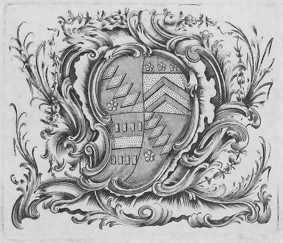

Reading with Austen digitally recreates the Library of Godmersham Park, the estate of Jane Austen's brother Edward Austen Knight. Our virtual library is based on an extant handwritten catalogue that lists all the books in his collection and their exact locations on his shelves. Here you can explore the Library as Jane Austen might have seen it, and browse photographs of and bibliographic information for the very editions she may have handled.
Born in 1767, eight years before Jane Austen, Edward was certainly the most fortunate of her six brothers. In 1779, he first met Thomas Knight (1735–1794), a rich distant cousin of the Reverend George Austen, and Thomas’s wife Catherine (d. 1812), when they visited the Austen home during their honeymoon. Edward must have made a good first impression, because he was then frequently invited to stay with Knights at their splendid estate, Godmersham Park, in Kent. In 1783, he was officially adopted by the childless couple. After making a four-year Grand Tour and attending Dresden University for a year, he married Elizabeth Bridges in 1791. On the death of his adoptive father in 1794, Edward became heir to all of the Knights’ estates, including Chawton House and the Manor Farm in Hampshire, as well as Godmersham Park. In 1798 he took over full control from his adoptive mother; she moved to Canterbury while he and his growing family moved from Rowling House, Kent, into nearby Godmersham. Edward’s wife died suddenly in 1808, after bearing eleven children; Edward never remarried, and on the death of his adoptive mother in 1812, he changed the family name from Austen to Knight. He remained at Godmersham until his death in 1852, outliving Jane Austen by thirty-five years.
Some eight miles southwest of Canterbury, Godmersham Park is a fine Palladian building, dating from about 1732. Its extensive grounds include woods and a large deer park. It was built for Thomas Knight, father of the Thomas Knight who adopted Edward Austen, who had changed his name twice: from Brodnax to May and then from May to Knight. Shortly before his death in 1781, Thomas Knight senior added two matching wings, each with five windows, to the front of the house; the western wing held a kitchen and household offices while the east wing housed a long library. When Jane Austen's brother, Edward Austen Knight, died in 1852, his heir, Edward Knight junior, inherited Godmersham, though he lived at another of the Knight estates, Chawton House in Hampshire. In 1874 he sold Godmersham, which has since had a succession of owners. The house survives today, but the library, regrettably, is no more. It was in ruins by 1920, when H. Avray Tipping described it as “abandoned and decayed,” although it still contained three immense bookcases in their original positions. Later in the twentieth century, the bookcases were removed and the library divided into a series of rooms, which are now used as offices by the Association of British Dispensing Opticians.
The west front of Godmersham Park from an 1874 auction catalogueThe Library at Godmersham Park housed the books collected over some two hundred years by the Brodnax (later May and then Knight) family, who had owned the Manor of Godmersham since 1590. In 1793, it was described in a guidebook by Zechariah Cozens as “a most excellent library.” When he moved to Godmersham in 1798, Edward Austen Knight inherited a collection of some 1,200 books (many of these in multi-volume sets), to which he and his descendants continued to add. It contained standard works of English, French, and ancient Greek and Roman literature, as well as books in Italian, Spanish, and German. Some of the books published on the Continent were purchased by Edward during his Grand Tour of 1786-90. The library was well stocked with biographical, historical, geographical, theological and travel writings, as well as books about architecture and painting, science and medicine, farming, horsemanship, agriculture, gardening, landscape, and leisure pursuits, such as treatises on whist and chess. Reference works included sets of periodicals, dictionaries, atlases, and parliamentary records. The range is typical of country-house collections of the time, although the number of novels, including ones by Jane Austen’s contemporaries and recent predecessors, is surprisingly high.
Jane Austen visited Godmersham Park on six occasions over a fifteen-year period, from 1798 to 1813, staying there for a total of about ten months. According to Nigel Nicolson, the estate is “more closely connected with Jane Austen’s life and work than any other surviving house except Chawton cottage.” She first visited Godmersham, accompanied by her parents and her sister Cassandra, just weeks after her brother took possession of the estate. They stayed for two months, from late August to late October 1798. She was next at Godmersham, again with her parents and Cassandra, for a month in September-October 1803. In 1805, following her father’s death, she was there with Cassandra and their mother for three months, from mid-June to mid-September; this was the longest of her visits. In 1808 she went on her own for three weeks, from mid-June to early July, recording her impressions of Godmersham Park and its library in letters to Cassandra. In 1809 she visited Godmersham Park with Cassandra and their mother for six weeks, from mid-May until the end of June. Her final stay was for two months, from mid-September to mid-November 1813. During this visit she wrote to Cassandra that “we live in the Library except at Meals & have a fire every Eveng.” On other occasions she rejoiced in being “alone in the library, Mistress of all I survey”—a vista which encompassed “five Tables, Eight and twenty Chairs & two fires all to myself.”
After the death of Edward Austen Knight in 1852 and before the eventual sale of Godmersham Park in 1874, Edward Knight junior moved the books to the library at his Hampshire estate, Chawton House, where they were combined with the books in his own collection. After Edward junior’s son Montagu George Knight inherited Chawton House in 1879, he had hand-made shelf tickets attached to the books, indicating their positions on the library shelves. In 1900, he also began affixing his bookplates, of which he had three, to many of the volumes, thus helping us to identify them today. After the death of Montagu George Knight in 1914, the library was gradually dispersed by succeeding generations. Many of the books listed in the 1818 catalogue are missing in a new catalogue compiled in 1908. Some fifty items were dispersed at a Sotheby’s auction of 9 July 1935, and further volumes were sold piecemeal in the latter part of the twentieth century. Nonetheless, well over a third of the works listed in the catalogue, about five hundred titles in all, are extant in the present-day Knight Collection, on loan to Chawton House Library from their owner Richard Knight, the great-great-great-grandson of Jane Austen’s brother Edward Austen Knight.
In 1818, a year after Jane Austen’s death, Edward Austen Knight began compiling a catalogue of his library. It consists of two leather-bound volumes, each with the date 1818 embossed on the cover. The volumes are written in two distinct secretarial hands. At least two further hands made additions in each of the volumes as further books were acquired, until the 1840s. The first catalogue lists the books, based on the title on the spine, in their shelf order: east, south, or west side of the library, columns from left to right, and shelf, from floor to ceiling. The catalogue is not a perfect record: the unknown principal compiler misspelled some titles (especially non-English ones) and authors’ names. Sometimes, the compiler made errors converting Roman to Arabic numerals, or omitted the date altogether. The compiler also recorded the place of publication and the “size” of each work: folio, quarto, octavo or duodecimo. Sometimes, the compiler obliterated titles and re-entered them elsewhere in the catalogue, or squeezed new acquisitions in between other lines or at the bottom of pages. Even the order of columns is sometimes shuffled: the first slip of the south wall, for example, is listed after the contents of the west case, at the very end of the catalogue. The second volume lists authors alphabetically, along with their corresponding works and shelf locations. Its principal compiler, whose identity is also unknown, apparently worked exclusively from the first volume, without consulting books on the shelves, since all of its errors are reproduced. It is alphabetized by the initial letter of the entry, and then by order in the first catalogue, replicating its spelling errors and updated shelf locations.
The Reading with Austen website project has located many titles missing from the present-day Knight Collection by searching for the five bookplates, all based on the various family coats-of-arms, of Thomas Knight, Edward Austen Knight, and Edward’s grandson Montagu George Knight (1844–1914). When this provenance is referenced in library catalogues, auction records, or bookseller lists, we can match the book to its entry in the Godmersham Library 1818 catalogue.  Thomas Knight, who adopted Edward Austen, used the same bookplate as his father, also named Thomas Knight (1701–1781). The plate includes the Knight, Brodnax and May arms, all names Thomas senior took in order to inherit various properties. The Knight arms in the first and fourth quarters of the shield (the upper left and lower right) consists of a diagonal band of lozenges, a symbol of honesty and constancy. Below the band, a five-petalled flower (known as a cinquefoil) represents hope and joy. The second quarter (the upper right) contains the Brodnax arms, a shield with two chevrons (in the shape of a roof rafter, signifying protection) and with three cinquefoils above. The May arms take up the third quarter: a fesse (a broad straight bar) between six small gold billets (small oblong blocks, representing trustworthiness). When Edward Austen took over his adopted father’s estates 1812 and officially took the Knight name, he had his own bookplate made, combining his Knight, Austen, and Leigh (his mother’s family) heritage into the one design. The Knight arms are represented in the first and fourth quarters with the addition of a canton (a square shape) in the top left corner of the shield to show he was not directly descended by blood from the Knight family. The Austen arms comprise the second quarter: though never officially registered, these arms were used by the Rev. George Austen and appear here as a shield with a chevron between three lion paws. The Leigh family is represented in the third quarter by an engrailed (cut edges) cross with a lozenge in the top left corner. Edward also adds two crests: one from the Knights (the Monk) and one from the Austens (the Stag). The monk or friar holds a stemmed cinquefoil in his right hand (this was originally a lantern but was changed with the Brodnax connection) with a bracelet of beads (a rosary) and a cross hanging from his left hand, the cross a symbol of faith and the Church. A red rose, a symbol of grace and beauty, was also added to the monk’s robe. “Suivant Saint Pierre” (following Saint Peter), the Knight motto since 1679, is also prominently displayed. Edward’s son (1794–1879) used the same bookplate as his father as far as we know—some books with this bookplate have Edward Knight junior’s signature. But his son, Montagu George Knight, created his own, playing with all the family arms and adding even more to the mix. Montagu had three bookplates engraved by the very prominent engraver Charles W. Sherborn. The plate pictured on the left, made in 1900, was done in the style of an ancient seal. The plate pictured on the right was made in 1901.
Pictured below, the third armorial circular bookplate, similar to the plate from 1900, is the most commonly seen. Montagu used it in many of those books that remained in the combined library collection once Godmersham was sold in 1874. This plate shows all the heraldic elements of the family heritage with the addition of the arms of his wife Florence Hardy’s family. The helmet is in profile with the visor closed, as is appropriate for either an esquire or private gentleman. The shield is slanted and includes on the dexter side (right side of shield, but the left side to the spectator) all the arms from Edward’s bookplate. The sinister side (left side, right to spectator) contains the arms of the Hardy family (Charles Hardy of Chilham Castle): a shield with three barred leopard heads and a slanting bar covered with three Catherine wheels (Catherine refers to St. Catherine, a Christian martyr, and serves as an emblem of one’s willingness to undergo great trials for one’s Christian faith). Montagu, following his grandfather, uses the monk crest with the rosary and cross, the cinquefoil and the rose on the robe. There are a few unexplained items: the three different symbols on the helmet, and the meaning of the leaf motif for the mantling (lambrequin). These might just be decorative touches, but if anyone has information please contact me through the website. For a more complete history of the various branches of the Knight family, see Chawton Manor and Its Owners: A Family History (1911) by William Austen Leigh and Montagu George Knight, as well as other works in the bibliography, especially those of Edward Hepper who was very gracious in sharing all his heraldic and Knight knowledge with me.
In addition to the books in the present-day Knight Collection, some fifty items listed in the 1818 Catalogue are now in libraries and museums. Jane Austen’s House Museum holds the Godmersham Park copies of Jane Austen’s six published novels, while the Godmersham Park Heritage Centre has Mary Hays’s six-volume Female Biography. One library in Canada (McGill University), one in England (the British Library) one in Australia (the University of Melbourne), and at least nine libraries in the United States own one or more ex-Godmersham books. The Harry Ransom Center in Texas has four books in its collection, while Stanford University Library has three. Other works have been sold in recent years by booksellers and auction houses or are currently (in 2018) on offer: the most important such item is a two-volume edition of poems by William Cowper, one of Austen’s favourite poets. Several individuals have generously bought ex-Godmersham titles and presented them to Chawton House Library, where they have rejoined the volumes in the Knight Collection. For a full list of contributing institutions and individuals, see our Special Thanks below. The Godmersham Lost Sheep Society (GLOSS), a research group of scholars and bibliophiles, is seeking to locate the rest of the scattered volumes, whether they be in institutional libraries, private collections, or with booksellers and auction houses. GLOSS has already acquired several previously missing titles and returned them to Chawton House and the Knight Collection. Do you have a book on your shelf with a Knight bookplate or, perhaps you live near a public, academic, or museum library: search your library catalogue for the bookplates or “Montagu Knight” in the provenance section for the catalogue record, or contact your librarian for aid. If you do find a book, add it to our shelves: take photographs of the spine, bookplate page, title page, and pages with marginalia (see a sample here). And, if you are interested in selling or donating the book to Chawton’s permanent collection, or contributing financially so we can purchase books as they become available, please contact us for more information.
How can a library be reconstructed when no visual record and little documentation of it exists? Our reimagining is based on partial descriptions of the library, floor plans and photographs of other rooms in Godmersham Park, and more general research into contemporary architecture, country house libraries, and the history of the Knight family. In a letter to Cassandra dated 3 November 1813, Jane Austen mentions “five Tables, Eight and twenty Chairs & two fires” in the library. By looking at maps of the building from an 1874 auction catalogue, the layout of the long, rectangular room with its two fireplaces on the south wall becomes more clear. The same catalogue also notes the dimensions of the “lofty library,” and the fittings of the primary rooms: In 1920, Henry Avray Tipping described Godmersham Park in detail and included several photos in his article “Country Homes, Gardens Old and New: Godmersham Park, Kent, the Property of Lord Masham.” He mentions the “great bookcases” of “the same period [1793] and in the style” of the “rusticated gate-posts...topped with caps and urns in the manner of Robert Adam.” These shelves, according to Tipping, are “about 15 ft. wide, those at either end of the room being straight fronted, but that occupying the middle position between the chimneypieces has a deep centre and diminishing sides, a form that greatly enhances the effect in its position between the slightly projecting chimney-breasts”. Unfortunately, no photographs accompany this description. Christopher Hussey, in his 1945 Country Life article on Godmersham Park, noted that the entrance hall and drawing room were “fully decorated” and “thoroughly representative of the taste of the 1730s.” The “simplicity of the remainder” of the rest of the house--including the library--was, Hussey suspects, due to a lack of resources after Thomas Knight senior’s spending on the entrance hall and dining room. In the absence of definitive information, our artistic rendering of the Godmersham Park Library takes creative license, while trying to be as historically accurate as possible given the resources available. We began with the overall architecture of Robert Adam’s neoclassical style, drawing elements from the primary rooms of the house to use in the library. Our artist incorporated elements from the fireplace and door lintels in the entrance hall and drawing room, and consulted paintings and photographs of other historical country house libraries to find models of period-appropriate furnishings. The globe in our recreated library (bottom right) is based on this one (bottom left), by the popular late eighteenth-century London artisan William Barden and his son Thomas.
The most important aspect of our library recreation, however, was the construction of the bookshelves. Because we knew the order and general size of the books, we wanted to replicate the shelves to scale in order to give the best sense of how they would have looked to Austen when she visited. The only information we had to work with was the general size of each case - “about 15 feet wide,” according to Tipping in Country Life—and data we could infer from the Godmersham catalogue itself. First, we counted the number of volumes that the catalogue listed on each shelf. Multi-volume sets are identified after their title; otherwise each book is a single volume. Then, we allotted each volume a width of one inch—a rough average to account for volumes both fat and thin. This allowed us to arrive at an estimate of the width of each shelf. So this section of the shelf—with 2 single-volume titles, one three-volume title, and one twenty-five volume title—measures 30 inches across. The catalogue also lists the size of each volume, so by deciding on an average height for each format—folio volumes are 20 inches, quartos are 12 inches, etc—we inferred the minimum height of each shelf. In this example, the tallest volume on the shelf is an octavo, so we have made the shelf 12 inches tall. These somewhat arbitrary measurements are useful for their relative difference, revealing that some shelves would necessarily be much taller or wider than others. Some mysteries remained, however, such as what was meant by the “slips,” which were listed in the catalogue either before or after the columns of each case—or, in the case of the first slip of the south case, at the very end of the catalogue. The usage in the catalogue seemed to imply that slips are similar to shelf columns, but we could never determine with certainty what they were. In the end, based on photos of other library shelves of the period, we decided to treat slips as narrower columns. To provide consistency across the slips in all three bookcases, we placed them on either side of the central column. In the catalogue, the books listed in the slips were always smaller sizes, so we imagined their shelves would generally be shorter as well. Finally, to avoid the visual awkwardness of a gaping hole at the top of each slip, we assigned empty shelves instead. After collecting a series of descriptions and reference images and calculating the size of our imagined shelves, we turned to an artist and web developer to create the aesthetic and technical elements of the project. To present the books in our digital library, a team of research assistants, volunteers, librarians, and archivists gathered, sorted, and cropped thousands of photos of the spines, title pages, book plates, and sometimes even marginalia of the extant books (see the catalogue, bookplates, and GLOSS section for more). On Reading with Austen, these extant books are represented on the shelves by their spines. Missing volumes are represented by a generic spine image. Where possible, we include links to digital editions available on open-access websites such as Google Books, Archive.org, and HathiTrust, or subscription services like Early English Books Online.
Our data is derived from a spreadsheet, created by Deborah Bygrave and revised by Hugh Mackay under the direction of Stephen Bending and Stephen Bygrave, which included transcriptions of the catalogue speculation about matching volumes, and other notes such as location at Chawton House. Building extensively on the original spreadsheet, we added obliterated entries, corrected transcription errors, and assigned an identification number to each entry based on its shelf location. If an entry was obliterated and entered again later in the physical catalogue, we included only the later entry (with its shelf location) in our data. If an entry was obliterated, without any repetitions, then we included that obliterated entry. We modified the base transcription in other ways, as well. We filled in “Ditto” and “...” to match the entry above. Some entries, especially European works, did not have a place or date of publication; after matching the entry to a published work, we included that metadata in square brackets. We then matched these catalogue entries to photographs taken of works identified as part of the library, a process complicated by various elements of eighteenth-century printing, such as multiple title pages and unnumbered and/or undated editions. Once we established which catalogue entry matched each physical work (sometimes a single volume, sometimes a set), we transcribed the title page’s metadata, collecting information about the title, author, and publication, and noting any significant marginalia such as Edward Austen Knight’s signatures. Although we transcribed French characters, we removed macrons. Because less than half of the books are extant, we had several hundred entries identified by a few words derived from the spine of the work, along with place and date of publication. Some descriptions were very specific, such as “Weld's Travels in America 2 vols London 1800,” while others, such as “Miscellanies London 1788,” were significantly more vague. For these works, we found the closest match possible, relying on resources such as the English Short Title Catalogue and the Copac catalogue. For all of our entries, we also tried to find links to online editions. We prioritized publicly available resources such as Google Books, Archive.org, and HathiTrust, but if we could not find an item available freely online, we turned to resources such as Early English Books Online and Eighteenth Century Collections Online. Again, we aimed for the closest possible match for each work. For some books, we could not find online versions at all. We are currently working on a clean dataset that will be released under a Creative Commons licence, useful for anyone with more questions about the collection: what were the most common words in the book titles? When were most of the books published? Is the collection dominated by a certain genre, or author, or publishing house? We hope that this website and its data will be of interest not only to lovers of Jane Austen, but also to bibliophiles, antiquarians, and anyone engaged with print culture and digital humanities.
Austen Knight, Edward. Jane Austen’s Brother Abroad: The Grand Tour Journals of Edward Austen. Edited by Jon Spence, Jane Austen Society of Australia, 2005.
Austen, Jane. Jane Austen’s Letters. 4th ed., edited by Deirdre Le Faye, Oxford UP, 2011.
Barnum, Deborah. “Seeking Lost Books.” Jane Austen’s Regency World, vol. 94, July/August 2018, pp. 46-51.
---. “WANTED! Books with Montagu George Knight Bookplates.” Jane Austen in Vermont, 19 Oct. 2017, https://janeausteninvermont.blog/2017/10/19/wanted-books-with-montagu-george-knight-bookplates/.
Dow, Gillian. “Reading at Godmersham: Edward’s Library and Marianne’s Books.” Persuasions, vol. 37, 2015, pp. 152–62.
Dow, Gillian, and Katie Halsey. “Jane Austen’s Reading: The Chawton Years.” Persuasions On-Line, vol. 30, no. 2, 2010, http://www.jasna.org/persuasions/on-line/vol30no2/dow-halsey.html.
Godmersham Park Library Catalogue. Bound MS. Chawton House Library, Chawton UK, 1818. 2 vols.
Hartley, Carol. “‘It is to have the Crest’: The Armorial Bearings of Knight, Austen, Leigh and Perrot.” Collected Reports of the Jane Austen Society 2001-2005, Jane Austen Society, 2008, pp. 331-38.
Hepper, Edward. “The Origins of the Knight Coat of Arms and Two Grants of their Arms.” Alton Papers, vol. 19, 2015.
---. “Heraldry Windows at Chawton House Library – Part 1: The Great Gallery.” Jane Austen in Vermont, 13 May 2016, https://janeausteninvermont.blog/2016/05/13/heraldry-windows-at-chawton-house-library-part-i-the-great-gallery/.
---. “Heraldry Windows at Chawton House Library – Part 2: The Great Staircase.” Jane Austen in Vermont, 25 May 2016, https://janeausteninvermont.blog/2016/05/25/heraldry-windows-at-chawton-house-library-part-ii-the-great-staircase/.
---. “Heraldry Windows at Chawton House Library – Part 3: The Great Hall.” Jane Austen in Vermont, 4 June 2016, https://janeausteninvermont.blog/2016/06/04/heraldry-windows-at-chawton-house-library-part-iii-the-great-hall/.
Hillan, Sophia. May, Lou & Cass: Jane Austen’s Nieces in Ireland. Blackstaff, 2011.
Le Faye, Deirdre. A Chronology of Jane Austen and her Family, 1600-2000. 2nd edn., Cambridge UP, 2013.
---. “Edward Knight’s Grand Tour.” Jane Austen Society Report, 2016, pp. 28-36.
---. “Edward Knight’s Grand Tour Portrait : Further Information.” Jane Austen Society Report for 2017, pp. 31-32.
---. “Fanny Knight’s Diaries: Jane Austen through her Niece’s Eyes.” Persuasions Occasional Papers, no. 2, 2000, http://www.jasna.org/persuasions/printed/opno2/le-faye.pdf. Last accessed 31 August 2018.
---. Jane Austen: A Family Record. 2nd edn., Cambridge UP, 2004.
Mueller, Jennifer Louise. “Scribbles and Scrapbooks: The Godmersham Park Library.” Chawton House, 1 November 2016, https://chawtonhouse.org/2016/11/scribbles-and-scrapbooks-the-godmersham-park-library/.
Murphy, Olivia. “Appendix: What Happened to Jane Austen’s Books?” Jane Austen the Reader: Artist as Critic, Palgrave Macmillan, 2013, pp. 177-82.
Nicolson, Nigel. Godmersham Park, Kent: Before, During and After Jane Austen’s Time. Jane Austen Society, 1996.
Parker, James. A Glossary of Terms Used in Heraldry. 1894. Heraldsnet, https://www.heraldsnet.org/saitou/parker/index.htm. Last accessed 31 August 2018.
St Louis, Mrs. “Coat-of-Arm Symbols.” http://vandenart.weebly.com/uploads/1/3/4/6/13460610/coat_of_arms_symbols.pdf
Sabor, Peter. “Godmersham Park Library: Jane Austen’s Paradise Regained.” Persuasions, vol. 39, 2017, pp. 31-44.
Sherborn, Charles Davies. A Sketch of the Life and Work of Charles William Sherborn, Painter-Etcher. London, 1912.
Slothouber, Linda. Jane Austen, Edward Knight, & Chawton: Commerce & Community. Woodpigeon, 2015.
Tipping, H. Avray. “Godmersham Park, Kent, The Property of Lord Masham.” Country Life, 6 November 1920, pp. 596-603.
Villaseñor, Alice Marie. “Edward Knight’s Godmersham Library and Jane Austen’s Emma.” Persuasions, vol. 29, 2007, pp. 79–88.
Wilson, Margaret. Almost Another Sister: Fanny Knight, Jane Austen’s Favourite Niece. George Mann, 1998.
Peter Sabor
Catherine Nygren, Megan Taylor
Nguyen Dinh
Mathieu Bouchard, Ashley Girty, Jennifer Mueller, Nathan Richards-Velinou, Willow White
Richard Knight, the owner of the Knight collection, who loaned the books to Chawton House.
The University of Southampton’s Gillian Dow, Director of Chawton House, and Darren Bevin, Librarian of Chawton House, who facilitated the book photography.
Volunteer photographers Teresa Trout, Joseph Hone, Stephen Clarke, and particularly Paquita Lamacraft, who took the majority of the book photos at Chawton House.
Deborah Bygrave and Hugh Mackay, under the direction of the University of Southampton’s Stephen Bending and Stephen Bygrave, who compiled a spreadsheet of the catalogue which formed a starting point for our own data.
Janine Barchas, Deborah Barnum, Eric Nye, Linda Dennery, Richard Knight, Peter Sabor, Kim Wilson and the Wisconsin Region of JASNA, who found, bought, and donated Lost Sheep, books from the original catalogue that had been separated from the collection and were discovered for sale elsewhere in the world.
The private collectors who provided access to their books: Martha F. Bowden, Jeremy and Carol Knight.
Richard Virr of the McGill Library and Stephen Clarke, who provided advice about eighteenth-century libraries.
Sarah Severson of the McGill Library, who provided expert advice about digitization and data practices.
The libraries, museums, auction houses, and book owners who provided photographs of, or allowed us to photograph, the books in their possession:
Albert and Shirley Small Special Collections Library, University of Virginia; Amherst College Library; Arader Galleries; Beinecke Rare Book and Manuscript Library, Yale University; Bernard Quaritch Ltd.; British Library; Chawton House; Getty Research Institute Library; Gildings Auctioneers; Godmersham Park Heritage Centre; Harry Ransom Centre Book Collections, University of Texas Libraries; Library Company of Philadelphia; McGill University Library, Rare Books and Special Collections; National Gallery of Art Library; Stanford University Library; University of Melbourne; William Andrews Clark Memorial Library (UCLA); Young Library, Smith College.
The many beta testers who experimented with our early versions of the library: Sarah Faulkner, Jessica Joyce, Matt Milner, Catherine Hynes, Devoney Looser, Hilary Duncan, Emily C. Friedman, Grant Haines, Katherine Hales, Willow White, Robyn Clarke, Davita DesRoches, Maria Clara Biajoli, Paquita Lamacraft, George Justice, Lena Zlock, Beatrijs Vanacker
For any queries, please contact the Burney Centre at burney.centre@mcgill.ca, or fill out our contact form.
For updates about Reading with Austen and books returned to Godmersham: The Burney Centre: Twitter